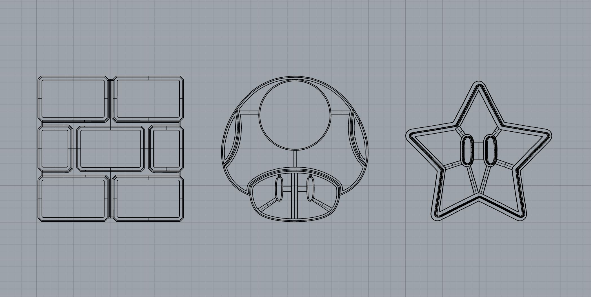
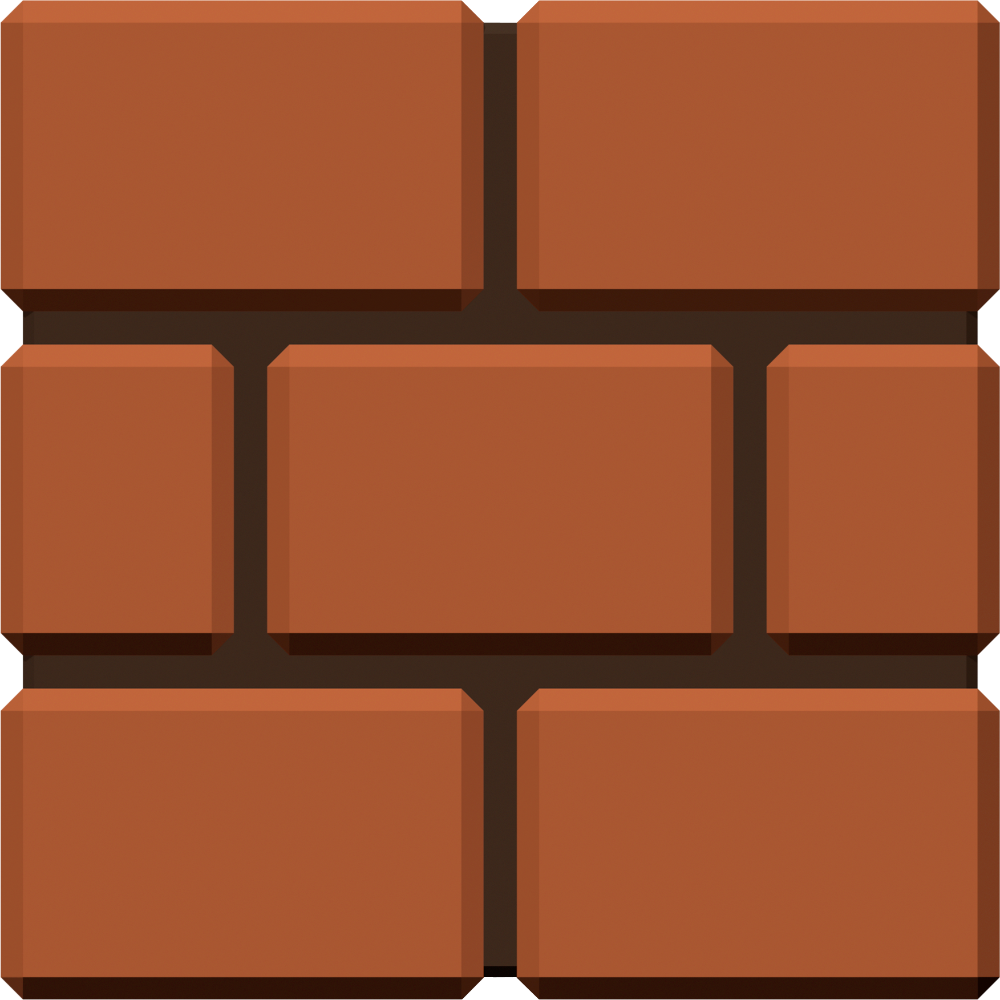

My First Rhino Model⭐
The Goal
Create 3 different cookie cutters from images using Rhino.
Image Preparation
The first thing I did was decide what I wanted to turn into a cookie! I settled on Nintendo's brick block, 1-up mushroom, and star. I believed these would be fun shapes to work with, and the thought of modeling other items in the future to build a Nintendo cookie cutter collection seemed intriguing. I grabbed these images online, desaturated them in Photoshop, and prepped them to be vectorized with image trace in Illustrator. Once vectorized, I exported the DXF file for all three items to use in Rhino!



Modeling the Cookie Cutters
After importing the DXF files into Rhino, I started turning the curves into solid models. For each cookie cutter, I first created offsets from the curves to create a wall thickness of 0.03 inches. (I used a caliper to check the wall thickness of one of my cookie cutters at home to model one with the same thickness!) I then extruded the walls to a height of 1 inch. In each of my cookie cutters, I had features that I wanted to show up in the cookie, but I also didn't want to push holes into the center of my cookies. Therefore, I modified my cookie cutters to create indents that would stamp lines when pressed into the cookie dough. Since I was unfamiliar with the thickness of rolled cookie dough, I looked up a cookie recipe online to determine what dimensions I needed to use to create the indents.
While I did run into some issues during my process, I was able to work around them, and I'm happy with the final result! My cookie cutters are designed to create 4 inch cookies!🍪
Brick Block


1-Up Mushroom


Star


Download the cookie cutter models, their STL files, and the original images on GitHub.